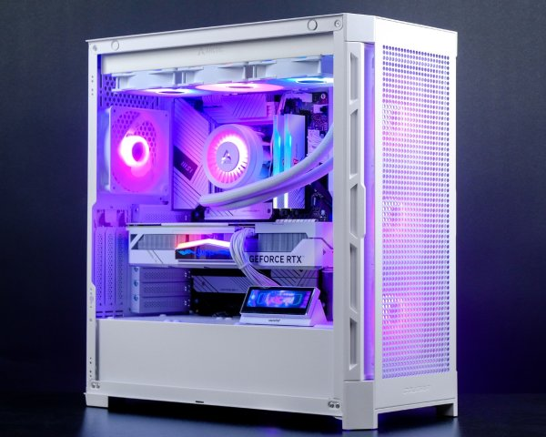
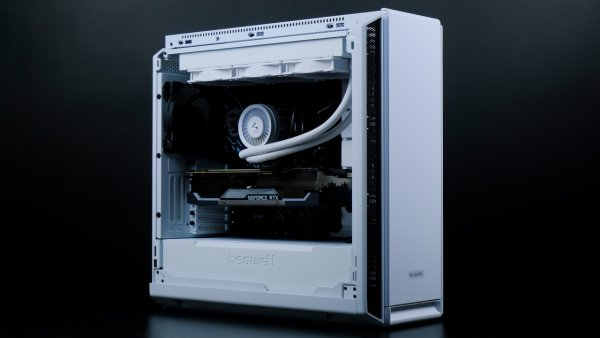
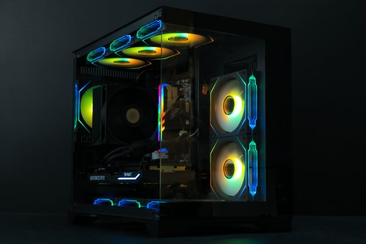

- Процессор
- Intel Core i5-14600KF
- Графика
- RTX 4070 SUPER iGame
- Память
- DDR5 KingBank 32GB 6000MHz
- Накопитель
- Kingston KC3000 1TB
Проекты / опыт команды
Компьютеры, которые команда King-Komp уже собрала. Сохраняем историю и исходные конфигурации — без превращения прошлых проектов в новые модели KORSAC.
Архив / три сборки
Конфигурации проектов, а не товарная линейка


